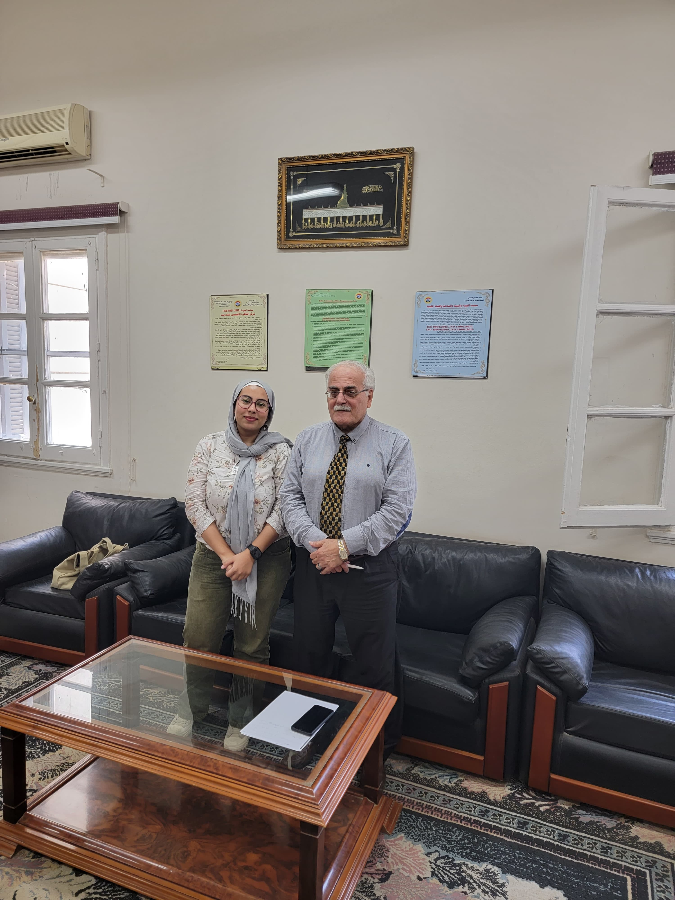
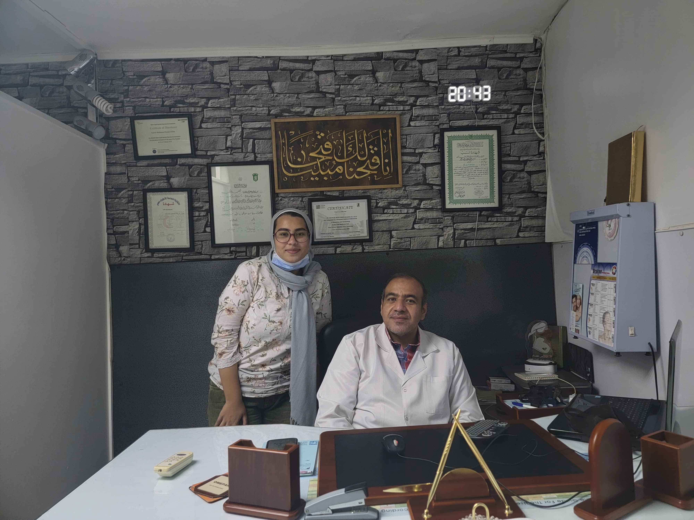
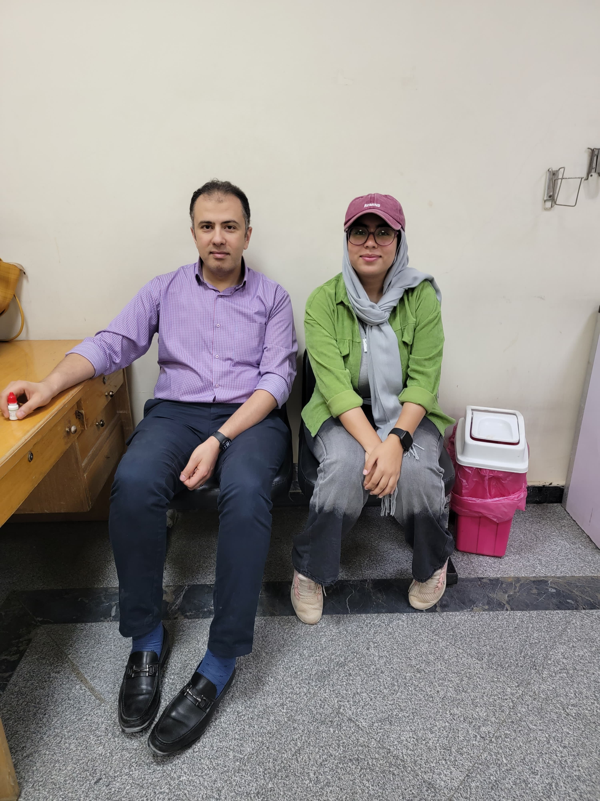

لعنة إهمال الكوكب..كيف أصبح الإنسان السبب في معاناته الصحية؟
- تواجه صحة الإنسان تحديات مستمرة مع ظهور العديد من الأوبئة والأمراض التي تتطور يوما عن يوم، والتي تزيد من مخاطر تدهور الصحة بشكل كارثي، ولكن يستهين البعض من مدى جدية تأثير ومساهمة التغيرات المناخية في البيئة، وبالتالي تأثيرها بشكل سلبي على صحة الإنسان من جميع النواحي للدرجة التي يجهلها البعض
- لقد نشأ الأغلبية العظمى في مصر على المناهج الدراسية التي تعلمهم مخاطر تلوث نهر النيل، ومخلفات المصانع التي يمكن أن تتسبب في وعكات صحية مثل التسمم، ولكن ما لا يعرفه الجميع أن تأثير المناخ على البيئة تطول قائمة اضراره وعلاقته بتدهور الصحة لتشمل الصحة النفسية، والخصوبة، وصحة العيون، وغيرها من المشاكل التي لا يجب وضعها في عين الاعتبار والتصدي لها بالشكل الصحيح.
- أوضح الدكتور إبراهيم مجدي استشاري الطب النفسي والادمان، أن التغيرات المناخية التي حدثت على مدار آخر 10 سنوات والتي تتضمن ارتفاع درجات الحرارة عن المعدل الطبيعي لها، تسببت في تبعات صحية وبيئية واجتماعية لا حصر لها، ومنها الجزء المرتبط بالصحة النفسية.
- قسم الدكتور إبراهيم مجدي، التأثيرات النفسية إلى أشكال قصيرة المدى يمكن تحولها إلى ممتدة المدى، وتكون تلك الأشكال في الغالب ناتجة عن ارتفاع درجات الحرارة التي تسبب خلل في الهرمونات المسؤولة عن إنتاجية الإنسان، لذا يؤدي ذلك إلى تدهور الطاقة والمزاج بشكل كبير، تجعل الشخص أكثر كسلاً، بالإضافة لهدم الساعة البيولوجية للجسم واضطرابات النوم، وتقع بعض تلك العوامل تحت خانة أعراض الاكتئاب الموسمي نتيجة لتغير المناخ، ونسبة سطوع الشمس وحبوب اللقاح والرياح التي تساهم في تغير الدورة المنتظمة لهرمون السيروتونين والميلاتونين، المسؤولين عن تنظيم دورة النوم الطبيعية.
- وفي تلك الحالة ينصح الأطباء للعلاج بالرياضة، والعلاج عن طريق الضوء، واتباع نظام غذائي محدد، ولكن إذا تخطى الأمر المرحلة القصوى، يتم معاملته نفس معاملة الاكتئاب المتعارف عليه، وأخذ الأدوية المخصصة له.
- وأشار الدكتور مجدي إبراهيم إلى أن ارتفاع درجة الحرارة يكون تأثيرها على الصحة النفسية أكبر بمراحل من انخفاض درجات الحرارة، لأنه مع ارتفاع الحرارة في القطب الجنوبي يحدث ذوبان الجليد، مما ينتج عنه زيادة في منسوب المياه وبالتالي بلاد مهددة بالغرق، مما يجبر السكان على المهاجرة وخلق حالة من عدم الاستقرار، بجانب غرق المحاصيل الزراعية الذي يتسبب في مجاعات، وعنف، وتعاطي المخدرات في بعض الأحيان، وتساهم جميع تلك العوامل في الاكتئاب الشديد.
-
- وصنف الدكتور إبراهيم مجدي، كبار السن على أنهم الفئة الأكثر تأثرًا بالتغيرات المناخية، التي تجعلهم عرضة للإصابة بالجفاف والذهان أو عدم انتظام الوعي، بالإضافة للمصابين باضطرابات نفسية بالفعل ويتم حجزهم في مستشفيات غير مجهزة بالتهوية الكافية أو المياه النظيفة في مثل تلك الأجواء لذا تتدهور صحتهم النفسية بشكل أكبر.
- شرح الدكتور سامح جلال استشاري طب وجراحة العيون، مخاطر التغيرات المناخية على صحة العيون التي تتمثل في نوعين وهما التغيرات التي تحدث بشكل مفاجئ مثل الارتفاع والانخفاض المستمر في درجات الحرارة التي تسبب جفاف والتهابات متكررة في العين، أو التقلبات الجوية الزائدة عن حدها في كلا الجانبين سواء الحرارة والبرودة والذي يمكن أن ينتج حساسية في العين والتهابات.
- كما أشار الدكتور سامح جلال إلى أن هناك بعض الظواهر الاستثنائية مثل كسوف الشمس التي يمكن أن تزيد من تأثر شبكية العين بالتعرض لأشعة الشمس غير المباشرة، لأنها تكون أقل إزعاجا للعين ووقعها هادئ اكثر لذا يتجرأ البعض على النظر إليها بشكل قد يؤثر على سلامة العين.
- وأكد الدكتور سامح جلال أن الأشخاص الأكثر عرضة للإصابة هم الذي تحكم عليهم طبيعة عملهم بالتعرض للتكيفات أو الدفايات بشكل كبير يجعلهم يصابوا بجفاف العين، بالإضافة للفلاحين أو عمال البناء في الشوارع، وخدمات الطرق، أو العاملين في أفران الخبز، بجانب شرطي المرور والبائعين والمهندسين الذين يباشرون عملهم في مواقع سُلط عليها ضوء الشمس بشكل يومي.
- وعلى الجانب الآخر، هناك الأشخاص الذين يتعرضون لأجواء باردة في الليل مثل أفراد الأمن والحراسة، وبعض الأشخاص المقيمين في مناطق صناعية مثل منطقة حلوان أو العبور، وتكون الأعراض الأكثر شيوعًا وقتها في كلتا الحالتين عبارة عن احمرار ودموع وحكة وزغللة نظرًا إلى أن طبقة العين السطحية تكون ضعيفة عن المعتاد، أو أن الحساسية تجعل العين بها نوع من أنواع الحرقة المستمرة، التي إذا زادت يمكن أن تؤدي لعيوب الإبصار من زيادة الحكة في العين، لذا يُنصح في الغالب بالوقاية عن طريق ارتداء نظارات الحماية المخصصة لمثل تلك الحالات، وقطرات لترطيب العين.
- لا يمتلك العديد من الأشخاص المعرفة الكافية عن مدى تأثير التغيرات المناخية على الخصوبة، لأنه على الرغم من التأثير البسيط والنادر للأمر إلا أنه لا يجب الاستهانة بالدرجة التي يمكن أن تصل لها خطورة تلك التأثيرات على خصوبة المرأة والرجل، وبالتحدث مع الدكتور تامر محمد عصام الدين استشاري أول أمراض النساء والتوليد وتأخر الإنجاب، أوضح أن تأثير المناخ على الخصوبة يستهدف الرجال أكثر من السيدات نظرًا إلى أن الحركة مع الحرارة المرتفعة والملابس الضيقة المنتشرة مؤخرًا بين الشباب يمكن أن يصاب الرجال بدوالي في الأعضاء التناسلية مما يؤثر على جودة الحيوانات المنوية.
- كما تؤثر نسب الرصاص الموجودة بمستويات عالية في مصر على خصوبة السيدات والرجال، وفي بعض الحالات القليلة يمكن لاضطرابات الغدد الصماء التي تضعف التبويض لدى المرأة أن تكون نتيجة تعرضها لكمية كبيرة من الملوثات، ورغم ندرتها إلا أنها قد تصل احيانًا لحدوث فشل في المبيض.
- تؤثر أيضًا طبيعة عمل الرجال أحيانًا على الخصوبة، على سبيل المثال الرجال الذين يعملون في مناطق درجة حرارتها عالية للغاية أو في مصانع الحديد و السيلكا والأسمنت أكثر عرضة لضعف الخصوبة نتيجة التأثر بكمية المواد التي يتم استنشاقها.
- لذا ينصح خبير أمراض النساء والتوليد باتباع الحل المنطقي دائما، وهو الخروج من الأماكن المزدحمة، والانتقال لمناطق كثافتها السكانية أقل، أو المدن الجديدة التي لم تتعرض بعد إلى نسب التلوث الموجودة بالفعل في المناطق المعتادة، وذلك لاحتواء المدن الجديدة على خطوط مياه نظيفة، ولا تحتوي على نسب الزئبق العالية المنتشرة في المياه والأسماك ولا الصدأ الناتج من كمية الحديد الكبيرة الموجودة في نهر النيل، لذلك أيضًا تتحسن خصوبة السيدات بشكل ملحوظ عندما تقضي فترة كبيرة في المناطق الريفية أو الصعيد.
- ولكن إذا كانت المرأة حاملا بالفعل، وانجبت طفل يحمل تشوهات خلقية لا يمكن الجزم بأنها بفعل الملوثات البيئية أو التغيرات المناخية، لأن النظام الحالي لا يدعم الأبحاث والدراسات اللازمة لتحديد إحصائيات دقيقة تخص الأمر، كما أن الأمر يمكن أن يؤدي في حالات نادرة للتعرض إلى الإجهاض ولكن لا يذهب الأطباء لذاك السبب إلا عند صعوبة انطباق أيًا من العوامل الأخرى على المرأة الحامل.
- أكد الدكتور علي قطب خبير البيئة والتغيرات المناخية، وأستاذ المناخ بجامعة الزقازيق على كل ما سبق ذكره عن طريق الأدلة والبراهين التي توضح بالتفصيل كيفية تأثر البيئة بالتغيرات المناخية وأثرها على صحة الإنسان، ففي البداية تم ذكر العلاقة المباشرة والتبادلية الموجودة بين الإنسان والبيئة والمناخ، حيث أن المناخ المداري يؤثر في البيئة ويحولها إلى منطقة ذات طابع خاص، وكذلك المنطقة العربية لها تأثير مناخي مختلف وفقًا للعوامل الجغرافية، وبالتالي تؤثر البيئة على صحة الإنسان عن طريق عدة ظواهر الجوية مثل ظاهرة الأتربة والرمال التي تأتي في مواسم الخماسين وموجات الخماسين التي تتكون في فصل الربيع وتأتي من خلال المنخفضات الخماسينية القادمة من الصحراء الأفريقية الكبرى، والتي يكون تأثيرها على مصر عبارة عن ارتفاع كبير في درجات الحرارة و أتربة ورمال تصل لحد العواصف الترابية التي تشكل تحدي على مرضى الصدر والحساسية والرمد الربيعي وبعض الأمراض الأخرى.
- بالإضافة إلى درجات الحرارة التي تصل إلى 40 درجة مئوية على القاهرة الكبرى والعديد من المحافظات الأخرى بينما تتجاوز 45 درجة في محافظات الصعيد، والتي تؤدي إلى الإجهاد الحراري، وهذا النوع من حالات الطقس يأتي مصاحبا لرمال وأتربة في أغلب الأحيان تساهم في انخفاض مدى الرؤية الأفقية على الطرق وخلق حوادث تؤدي لارتفاع معدلات الوفيات.
- وأفاد الدكتور علي قطب بأن الارتفاع الكبير في درجات الحرارة يؤثر في حرق المزروعات مما يتسبب في نقص الغذاء وتلوث الهواء، بجانب الظواهر الجوية مثل الفيضانات أو السيول أو ظاهرة المد والجزر التي قد تؤدي إلى تدمير المناطق المأهولة بالسكان أحيانا، وتجرف تلك السيول الحشرات من فوق الجبال.
- وتطول قائمة الكوارث لتشمل ارتفاع ملوحة البحر المؤدي إلى انقراض الثروة السمكية، وإنتاج أنواع جديدة، كما تقتل الملوحة إنتاجية الأراضي الزراعية، وعدم صلاحية الأراضي المجاورة للبحار في الزراعة، وكل ذلك يرشدنا إلى نتيجة النشاط البشري المدمر لكل شيء، فالإنسان يخلف وراءه نتيجة المخلفات المصاحبة لظاهرة الرعي الجائر، غاز الميثان وهو أحد الغازات الأشد خطورة ويعتبر غاز قاتل بالنسبة للغازات السامة الأخرى مثل غاز الكربون أو ثاني أكسيد الكربون، ويعتبر غاز الميثان من الغازات التي نتجت عن الملوثات، وعدم استخدام الطرق العلمية في دفن المخلفات الصلبة.
- لذلك تنادي المنظمات العالمية بإقامة مشروعات للتوسع والانتشار في بناء مدن جديدة لتخفيض الكثافة السكانية من القاهرة الكبرى إلى تلك المدن مثل العاصمة الإدارية أو القاهرة الجديدة والعبور و6 أكتوبر.
- لذلك في الختام، من المهم أخذ قضية المناخ والبيئة في عين الاعتبار، والنظر لها بشكل أعمق لفهم الجوانب المتعددة والخطيرة لتلك القضية الشائكة التي تحاول جميع المنظمات العالمية والمبادرات لفت النظر إليها بشتى الطرق، لتوعية الجيل القادم بأهمية إصلاح ما تم إفساده في السنوات المنقضية نتيجة جهل بقضية المناخ، وإمكانيات ضعيفة، لأن الأمر تخطى جميع الحواجز ليصبح قضية تشغل حيز كبير من حياة كوكب الأرض بأكمله.